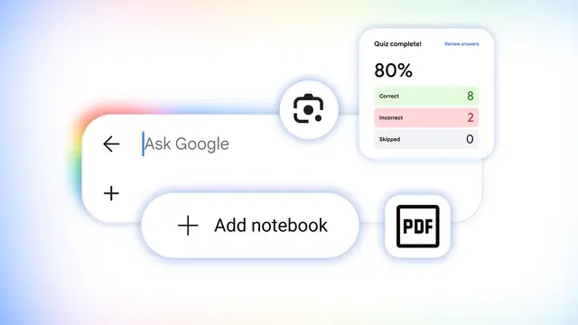

Google / 研究
Google検索が「AI学習環境」へ進化、クイズ・Lens・ノート・教材生成を統合

Googleは2026年8月19日、Google SearchのAI機能を活用した5つの新しい学習支援機能を発表しました。AI OverviewsやAI Mode、Google Lens、Gemini Notebookを横断し、概念理解から問題演習、教材整理、学習資料の生成までを検索画面中心に完結させる構想です。
QUICK READ
この記事の要点
複雑な概念を「生成UI」で可視化
AI Modeでは、ユーザーの質問に応じてインタラクティブなツールやシミュレーションを動的に生成できます。 例えば「pH scale」と検索するとAI Overviewに視覚的な解説を表示し、さらに「柑橘類をpHスケール上に配置して」と依頼すれば、AI Modeが質問専用の体験を生成します。 このGenerative UI機能はAI Modeで英語向けに世界展開され、AI Overviewsでも展開が始まっています。単純な文章回答ではなく、質問ごとに操作可能なUIそのものを生成する点が技術的な特徴です。
Search内で練習問題を自動生成
Google Searchでは、科学、数学、人文学、外国語などを対象にカスタム練習クイズを作成できます。 ACT、AP、GRE、LSAT、MCAT、SATなどの試験対策にも対応し、The Princeton ReviewやCareers360、PhysicsWallah、Akira Enemなどの教育企業のコンテンツを活用します。 回答ごとの解説や関連情報へのリンクも提供され、英語ではAI OverviewsとAI Modeから無料で世界的に利用可能です。
Google Lensが「答え」ではなく途中過程を指導
今後数週間でGoogle Lensにも新しい学習体験が導入されます。 問題やノートをカメラで撮影すると、AI Overviewが考え方を説明し、間違った可能性のある箇所を特定します。さらにAI Modeへ移行して追加質問を続けることもできます。 画像認識、生成AI、検索を組み合わせ、単なる解答検索から対話型チューターへ役割を広げる形です。
Discord掲載記事からの抜粋です。詳細・文脈は全文と出典をご確認ください。
出典・参考リンク
日付はAFNJPへの掲載日です。発表元の公開日とは異なる場合があります。